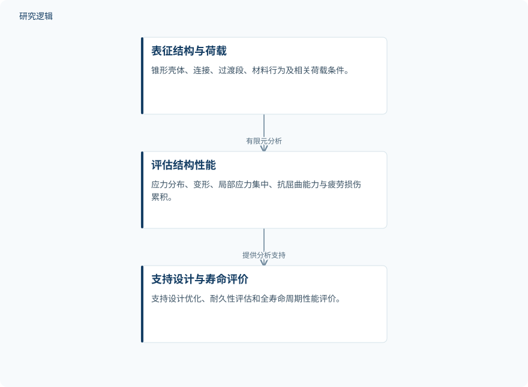

摘要解读
风力机塔架结构设计与性能分析综述
Review on Structural Design and Performance Analysis of Wind Turbine Towers
解读更新 2026-10-17 15:10 · 依据公开摘要整理，未核验全文细节
风机容量与轮毂高度持续增加，塔架如何兼顾安全、耐久与成本？这篇综述围绕不同塔架形式，梳理有限元分析在静力、疲劳及动力响应评估中的作用，为理解塔架设计需要关注哪些性能问题提供线索。
文章目录
塔架增高后，性能评估不能只看承载能力
塔架是风机的关键支撑结构。随着风机容量和轮毂高度增加，结构安全性、耐久性与成本效益愈发重要。该综述覆盖钢制管状塔架、混凝土塔架、钢—混凝土混合塔架及格构式塔架，讨论范围包括力学行为、耐久性、静力响应、疲劳性能，以及动力与抗震特性。
以有限元分析串联结构细节与性能评价
这是一篇综述，摘要明确的方法是综合既有研究，重点讨论有限元分析（FEA）的作用，而非报告一项新试验。有限元模型可表征锥形壳体、连接、过渡段、材料行为及相关荷载条件，进而评估应力分布、变形、局部应力集中、抗屈曲能力和疲劳损伤累积。摘要将其概括为支持设计优化、耐久性评估与全寿命周期性能评价的分析框架。
依据摘要整理的有限元分析作用示意


仅概括摘要明确描述的建模、性能评估与应用支持关系，不代表论文原图或新增实验流程。
下载 SVG图示关系说明
实线表示相邻阶段的信息流，虚线表示跨阶段联系或反馈。
表征结构与荷载 → 评估结构性能：有限元分析；评估结构性能 → 支持设计与寿命评价：提供分析支持
连接、循环荷载与动力效应是关注重点
综述所涉及的研究表明，静力评估需要特别关注法兰连接和过渡区域；疲劳性能则受到循环风荷载与塔架特定荷载条件的显著影响。这些结论指出了不同性能问题对应的关注重点，但摘要没有给出各类塔架之间的定量优劣排序。
模态与地震分析进一步强调了固有频率控制、长周期地震动、近场效应及土—结构相互作用对动力响应的重要性。摘要还提到，将有限元分析与机器学习预测、声发射监测和振动控制装置结合的新兴方法；数值建模与数字孪生、结构健康监测的进一步融合，则被表述为未来应用方向，而非已经验证的统一方案。
摘要能提供问题地图，不能替代验证细节
仅凭本次完整摘要，无法判断纳入研究的数量、检索筛选方式、试验样本与工程案例规模，也无法核对不同塔架比较时的尺寸、材料和荷载条件是否一致。有限元模型的验证范围、预测误差，以及机器学习和监测方法的实际适用边界同样未在摘要中交代。这些属于当前资料无法判断的信息，不能据此认定论文未开展相关工作。
阅读启发：先辨清模型、预测与监测如何衔接
阅读启发：进一步阅读时，可重点追问机器学习预测针对哪些结构性能、与有限元结果如何衔接，以及声发射监测如何关联疲劳损伤评价。对数字孪生与结构健康监测，应区分摘要中的未来展望与已有验证。当前资料更适合帮助确定阅读问题，尚不足以判断智能运维或设计优化能带来多大收益。
以上为本站阅读启发与建议，不是论文已验证的结论。